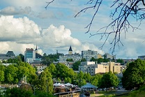

Lappeenrannassa matkailu.
Lappeenranta on viehättävä ja monipuolinen matkailukaupunki Etelä-Karjalassa, Saimaan etelärannalla valtatie 6:n varrella. Lappeenranta tunnetaan upeasta järviluonnostaan, historiallisista nähtävyyksistään ja eläväisestä satama-alueestaan, joka houkuttelee matkailijoita ympäri vuoden.

Yksi Lappeenrannan tärkeimmistä nähtävyyksistä on lumoava Lappeenrannan linnoitus, joka tarjoaa ainutlaatuisen matkan kaupungin historiaan. Linnoituksen alueella voi tutustua museoihin, vanhoihin rakennuksiin sekä nauttia tunnelmallisista kahviloista ja käsityöputiikeista.
Lappeenranta on myös täydellinen kohde luonnon ystäville. Saimaa tarjoaa upeat maisemat, vesistöelämyksiä ja mahdollisuuksia retkeilyyn. Alue kuuluu lisäksi UNESCO Global Geopark -kokonaisuuteen, mikä tekee sen luonnosta erityisen arvokkaan ja kiinnostavan matkakohteen.
Kaupungin sydän on kesäisin vilkas Lappeenrannan satama, jossa voi viettää aikaa järvimaisemista nauttien. Satamassa kannattaa ehdottomasti maistaa paikallisia erikoisuuksia, kuten perinteisiä suolaisia Vetyjä ja Atomeita, sekä pysähtyä kahville makeiden herkkujen kera.